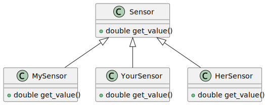
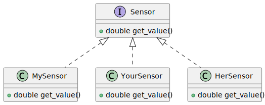

Pure Virtual Methods, And Interfaces¶
Polymorphic Usage Of Objects¶
Derived classes behave as-a sensor ⟶
virtualPossibly many derived classes ⟶ there are many sensor types out there, one class for each
In the current form, the base class
Sensorhas an implementation ofget_value()

Sensor Base Class: One Among Many?¶
Questions
What sensor kind does
Sensor(the base class) implement?Why does it implement anything at all?
(Alas, implementations are the business of derived classes)
Answer
Sensoris an interface, not a classC++ does not differentiate, but others (e.g. Java and C#) do
Derived classes realize that interface
Interfaces don’t implement anything

Towards Interfaces: Pure Virtual Methods¶
Pure virtual method:
= 0;(like “no implementation”, or NULL pointer)Class
Sensorbecomes abstract⟶ cannot be instantiated
#include <iostream>
class Sensor
{
public:
virtual double get_value() const = 0; // <-- purposely *no* implementation
};
class MySensor : public Sensor
{
public:
MySensor(double base, double correction)
: _base{base},
_correction{correction} {}
double get_value() const override // <-- overriding method
{
double value = _base + _correction;
std::cout << "MySensor::get_value(): " << value << std::endl;
return value;
}
private:
double _base;
double _correction;
};
#include "sensors.h"
#include <iostream>
int main()
{
MySensor ms{37.3, 0.25};
Sensor* ps = &ms;
double value = ps->get_value();
std::cout << value << std::endl;
return 0;
}
$ ./code/pure-virtual-methods/cxx-inher-oo-pure-virtual-methods
MySensor::get_value(): 37.55
37.55